Telesalud: auditoría de la experiencia del paciente
Resumen
Telesalud resuelve bien el lado administrativo (triage humano, cobertura nacional, seguimiento), pero la experiencia del paciente tiene problemas graves de accesibilidad y de lenguaje, sobre todo en el celular. Casi todo se puede corregir cambiando solo lo que ve el paciente, sin tocar los datos que recibe el CESFAM.
- Accesibilidad: el zoom está bloqueado, no hay encabezados, el tutorial es solo imágenes sin texto alternativo, y el aviso de emergencia (131) es el texto menos legible del formulario (12 px, contraste 4,21:1). HECHO VERIFICADO
- Formulario: 25 controles, ningún campo activa el teclado numérico ni el autocompletado del celular, y los campos vacíos se ponen rojos sin decir qué falta. HECHO VERIFICADO
- Lenguaje: el paciente debe traducir su necesidad a 12 prestadores y 63 motivos que se solapan. Pero el triagista "define el tipo de prestación", así que queda por validar cuánto afecta una categoría mal elegida a la atención. HIPÓTESIS POR VALIDAR
- Expectativas: el buscador promete "menos de 24 horas", mientras que el promedio 2021–2024 fue de 8 a 11 días, y un CESFAM informa 20 días hábiles. Además, en ese CESFAM la solicitud se anula si no se contesta la llamada tres veces. HECHO VERIFICADO
- Datos repetidos: se piden datos que el Estado ya tiene (CESFAM de inscripción, identidad). Iniciar sesión podría evitarlo, pero la página no lo explica, y no sabemos qué se rellena solo. HIPÓTESIS POR VALIDAR
Cómo funciona Telesalud por dentro
El paciente ve un formulario. Detrás hay un equipo con roles definidos y plazos que, según la fuente, no coinciden entre sí.
Roles y flujo del lado del CESFAM
- Roles HECHO VERIFICADO: Triagista (profesional), Gestor/a de Casos, Administrativo/a, Supervisor/a, Líder de la estrategia y Referente técnico. Si no hay médico, el triage puede hacerlo enfermera, matrona, nutricionista, psicólogo, kinesiólogo u otro.
- Qué hace el triagista HECHO VERIFICADO: "Revisar los datos del formulario… complementar con la revisión del registro clínico electrónico, la ficha clínica y/o contacto telefónico. Determinar la vía de atención (presencial o remota), la priorización (alta, media o baja) y definir el tipo de prestación".
- Cómo termina una solicitud HECHO VERIFICADO, de tres formas: una llamada del personal clínico, un agendamiento que hace el administrativo (que "asigna cupo en agenda y entrega la información de manera telefónica"), o la gestión de casos.
- Rendimiento esperado HECHO VERIFICADO: el triagista revisa de 6 a 8 solicitudes por hora y el administrativo hace de 10 a 11 agendamientos por hora.
- Criterio de prioridad HECHO VERIFICADO: según las Orientaciones SSMS, la prioridad Alta incluye a "personas mayores de 60 años y personas en situación de discapacidad". INFERENCIA: por eso importan la fecha de nacimiento y la casilla de discapacidad, aunque el formulario no lo explica.
- Atenciones solo presenciales HECHO VERIFICADO: odontológica, controles de 0–6 meses y niño sano, violencia intrafamiliar, heridas, entre otras. Lo que se resuelve a distancia típicamente son resultados de exámenes, recetas y licencias.
- Canales HECHO VERIFICADO: los Lineamientos mencionan acceso web, por redes sociales y "vía telefónica". La norma técnica 237 permite que una persona que no domina la tecnología sea "asistida por una persona de su confianza o… un profesional, técnico o administrativo". El sitio no menciona ninguna de estas alternativas. OBSERVACIÓN DIRECTA
- Lo que no encontramos: la lista oficial de estados y su significado, los códigos de cierre, y reglas sobre el texto libre o la reclasificación de categorías.
Los plazos: cuatro estándares distintos
| Fuente | Qué mide | Alta | Media | Baja |
|---|---|---|---|---|
| Orientaciones SSMS 2022 | Cierre, después de apertura + priorización (≤ 2 días hábiles) | 1 día hábil | 3 días hábiles | 5 días hábiles |
| Orientaciones SSMS 2022 | Atención de salud, desde la creación | 4 días hábiles | 7 días hábiles | 10 días hábiles |
| Lineamientos MINSAL 2023 | Plazo de agendamiento | 24–48 h | 48–72 h | 7 días |
| RPSP 2025, metas "en general" | — | 24–48 h | 7–10 días | 15 días |
| RPSP 2025, resultado 2021–2024 | Media nacional | 8 días | 11 días | |
| CESFAM Madre Teresa de Calcuta (Ancora UC), 2024 | Lo que se informa al paciente | "20 días hábiles" | ||
| telesalud.gob.cl (meta description) | Lo que ve el paciente en el buscador | "habitualmente en menos de 24 horas" | ||
| Servicio de Salud Metropolitano Central | Nota de prensa | "plazo aproximado de 72 horas" | ||
Todas las filas son HECHO VERIFICADO sobre lo que dice cada fuente, no sobre el tiempo real hoy.
Datos de uso (2021–2024, RPSP 2025)
- Motivos más frecuentes: medicina general (28,9%), control crónico (10,4%) y odontología (7,7%). HECHO VERIFICADO
- Distribución por prioridad: alta 12,1%, media 39,7% y baja 46,2%. HECHO VERIFICADO
- El artículo lo escribe el propio equipo implementador (OPS/MINSAL), que lo declara como conflicto de interés. Hay una inconsistencia interna sobre cuántos establecimientos tuvo el piloto de 2021. HECHO VERIFICADO
- Volumen reciente: más de 4,19 millones de solicitudes en 2025 y más de 2,99 millones en el primer semestre de 2026. HECHO VERIFICADO
Auditoría UX/UI
La auditoría cubre el recorrido completo, desde la búsqueda hasta consultar el estado, en celular (390×844 y 320 px) y escritorio (1366×768).
- Mediciones: se hicieron el 29-09-2026 con un navegador automático sobre el sitio público y datos de prueba ("AAAA", "PRUEBA"), sin enviar nada.
- Capturas del recorrido real: una solicitud real enviada por el autor; tienen datos personales y no se incluyen. Se citan como "recorrido real".
- Capturas de la auditoría: las A01–A12 son las mediciones de esta auditoría, están en
evidencia/y solo tienen datos de prueba.
Evidencia de la auditoría

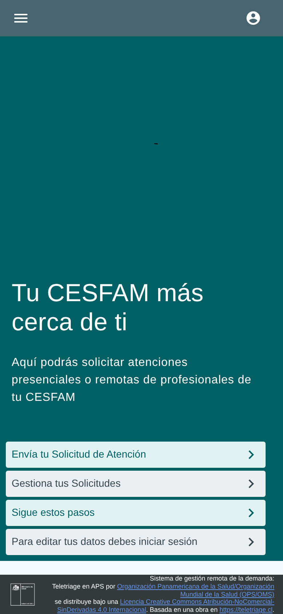
A01 · Inicio, celular
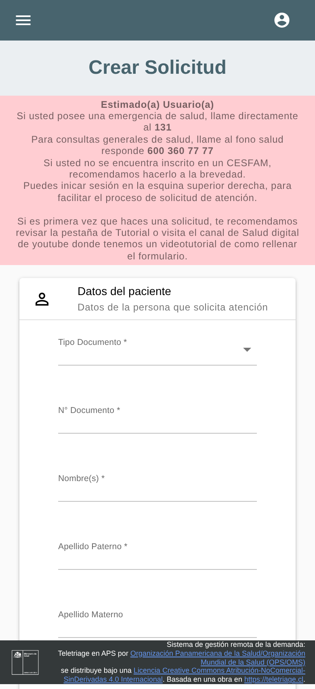
A02 · Formulario y aviso rosado
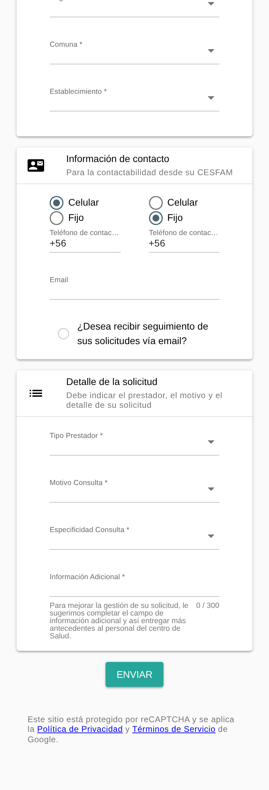
A03 · Contacto y detalle
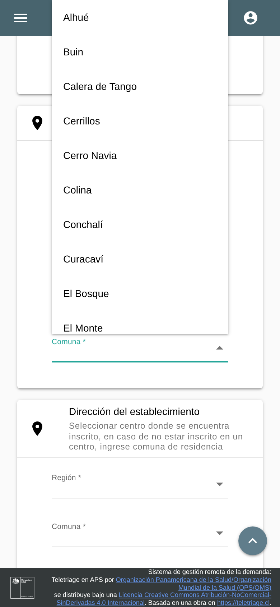
A04 · Lista de comunas
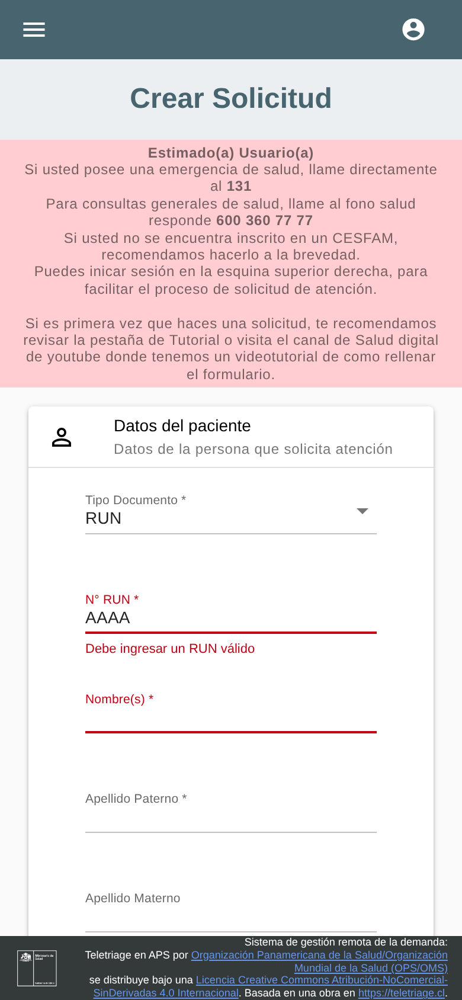
A05 · Validación
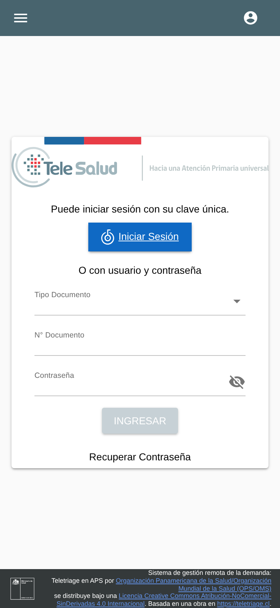
A06 · Inicio de sesión
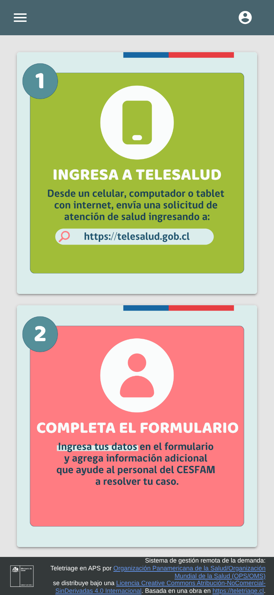
A07 · Tutorial
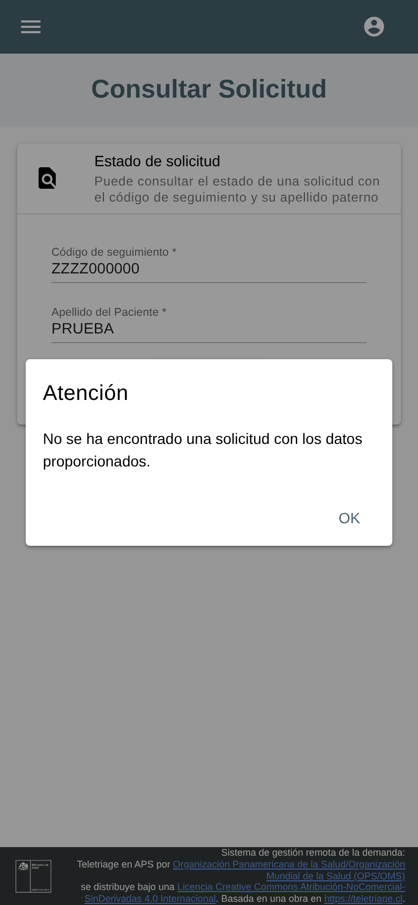
A08 · Consultar, error
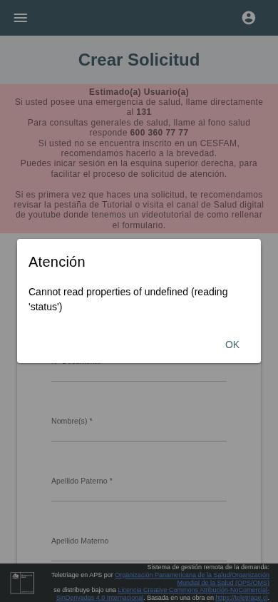
A09 · Falla de red
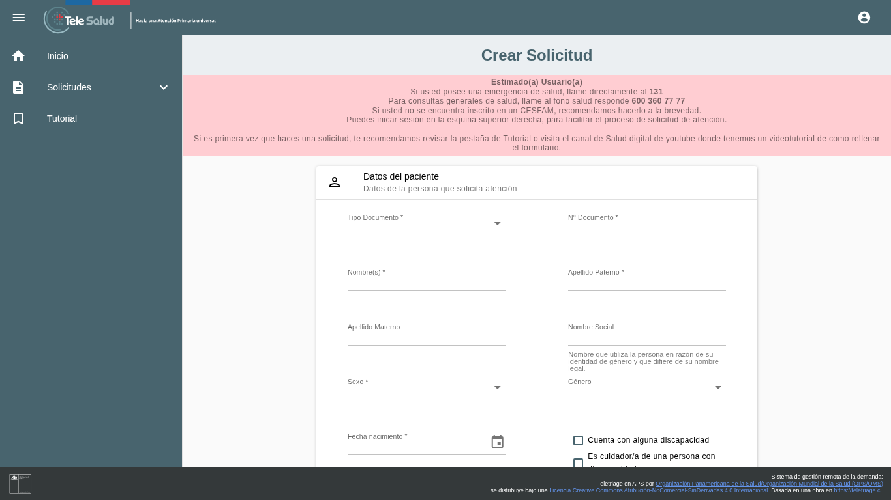
A10 · Formulario, escritorio
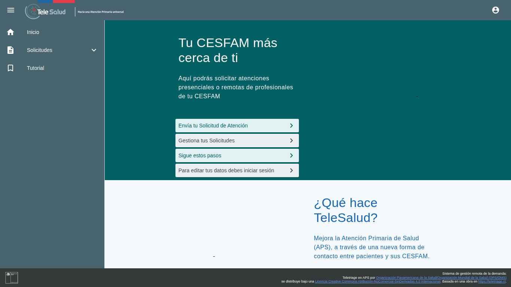
A11 · Inicio, escritorio
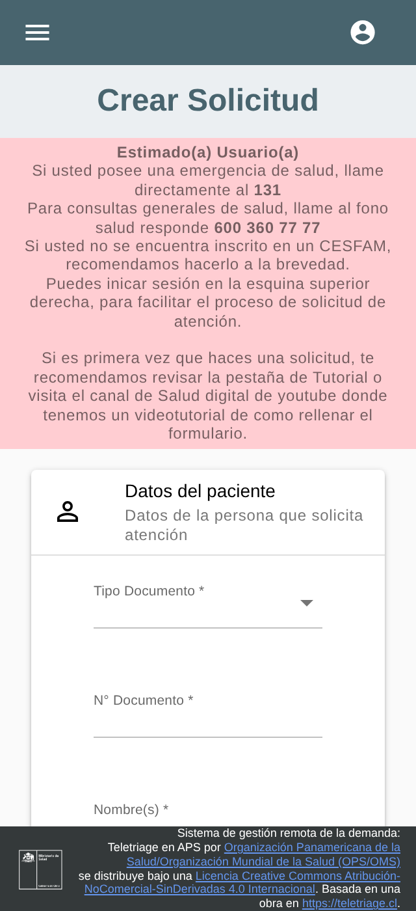
A12 · 320 px
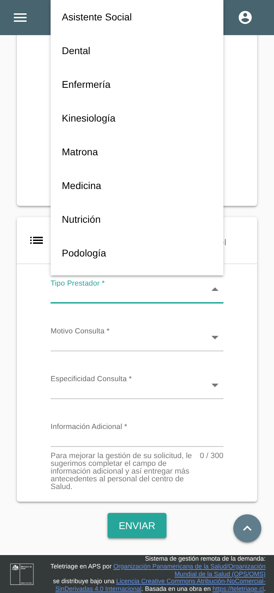
A13 · Tipo de prestadorDatos que el sistema ya tiene y vuelve a pedir
Para usar Telesalud hay que ser usuario de Fonasa e estar inscrito en un CESFAM HECHO VERIFICADO. Aun así, el formulario pide a la persona datos que el Estado ya conoce.
| Dato pedido | Quién ya lo tiene | Hoy | Certeza |
|---|---|---|---|
| RUN, nombres, apellidos, fecha de nacimiento, sexo registral | Registro Civil (a través de ClaveÚnica) | Se escriben a mano; con sesión iniciada, no sabemos si se rellenan | HIPÓTESIS POR VALIDAR |
| CESFAM donde está inscrito | Fonasa / el propio CESFAM (inscripción per cápita) | Se elige entre una lista (11 centros en San Bernardo) | INFERENCIA |
| Región y comuna del establecimiento | El propio formulario: sale del establecimiento, y ya se preguntó en la dirección | Se piden dos veces | HECHO VERIFICADO |
| Rango de edad en Dental ("Examen dental de 20 a 64 años") | La fecha de nacimiento, ya ingresada | Se vuelve a elegir | HECHO VERIFICADO |
| Dirección, teléfono, email | Ficha del CESFAM; cuenta de Telesalud si ya la usó | Se escriben a mano, sin autocompletado del celular | INFERENCIA |
| Si es persona mayor (criterio de prioridad alta) | La fecha de nacimiento | Se calcula sin decírselo a la persona | INFERENCIA |
Qué hace bien (no reconstruir)
- Triage humano, con ficha y teléfono. Es la parte más difícil y la que da valor.
- Cobertura nacional y volumen alto (más de 4 millones de solicitudes al año).
- El aviso de emergencia y Salud Responde aparecen antes del formulario.
- Nombre social, género inclusivo, casillas de discapacidad y cuidador.
- Tipos de documento: RUN, DNI, pasaporte, NIP y recién nacido sin RUN.
- La lista de comunas se puede filtrar escribiendo. HECHO VERIFICADO
- El RUN inválido muestra "Debe ingresar un RUN válido". HECHO VERIFICADO
- Con teclado, el orden es lógico y las listas se pueden operar. HECHO VERIFICADO
- A 320 px no aparece scroll horizontal. HECHO VERIFICADO
- Los campos tienen nombre accesible (aria-label). HECHO VERIFICADO
- Seguimiento en 3 estados, saludo por nombre, y opción de anular.
La taxonomía de categorías
Observamos el catálogo en el sitio público: 12 prestadores y 63 motivos, idéntico en los CESFAM Confraternidad y El Manzano. No revisamos otras comunas. HECHO VERIFICADO
| Prestador | Motivos | Resumen |
|---|
- El tercer nivel casi no agrega nada. En la mayoría de los motivos la especificidad repite el motivo; solo cambia en Medicina, Dental y Matrona. HECHO VERIFICADO
- Hay solapes: Control Crónico en 4 prestadores, Renovación de receta en 2, Certificado en 3, y Rehabilitación y ayudas técnicas en 2. HECHO VERIFICADO
- Hay vacíos: no existen categorías para retirar medicamentos, pedir por otra persona (salvo quien cuida a una persona con discapacidad), "no sé", ni dolor dental (Dental solo tiene exámenes por edad). HECHO VERIFICADO
- Hay jerga: "Profesionales Chile Crece Contigo", "Control de la Díada", "MADIS", "Técnico en enfermería". HECHO VERIFICADO
- El triagista puede corregir la categoría: "define el tipo de prestación". El costo de una categoría mal elegida quizá recae más en la persona (esfuerzo, duda, confianza) que en la atención. HIPÓTESIS POR VALIDAR
- Las categorías sí se usan en la gestión: los indicadores oficiales se cortan por prestador y motivo. HECHO VERIFICADO
Accesibilidad: lo que exige la norma
| Norma | Qué dice | Qué implica para Telesalud |
|---|---|---|
| Decreto 1 (2015) y Ley 20.422, accesibilidad web del Estado | Exige seguir estándares W3C; según Senadis, el nivel requerido es WCAG AA. HECHO VERIFICADO | Como sitio del Estado, Telesalud estaría obligado; varios hallazgos de esta auditoría (U07, U08, U11, U21, U26, U27) no cumplen AA. INFERENCIA: la exigencia de AA es la lectura de Senadis, no el texto del decreto. |
| Norma técnica 237, prestaciones a distancia | Una persona que no domina la tecnología puede ser "asistida por una persona de su confianza o… un profesional, técnico o administrativo". HECHO VERIFICADO | El sitio no menciona esta posibilidad ni la vía telefónica (U32). |
Método y fuentes
Método de la auditoría
- Navegador: Chromium sin interfaz, con perfil temporal vacío, en celular emulado (390×844, 320 px) y escritorio (1366×768). Solo lectura: no se envió ni anuló nada.
- Mediciones: atributos de cada campo (tipo, inputmode, autocomplete, maxlength, etiqueta), tamaños táctiles y contraste según la fórmula WCAG 2.x, con transparencia incluida. Además: validación con datos falsos, orden de tabulación, reflujo a 320 px y falla de red simulada.
- Limitaciones:
- La API del sitio rechaza al navegador sin interfaz en modo escritorio; por eso las pruebas de escritorio usaron un agente de usuario normal.
- Google bloqueó las búsquedas automáticas.
- El contraste se midió en elementos representativos, no en todos.
- No se probó con lectores de pantalla ni con personas.
Fuentes principales
- González et al., Rev. Panam. Salud Pública 2025: Telesalud 2021–2024
- MINSAL: Lineamientos técnicos de gestión remota de la demanda (2023)
- SSMS: Orientaciones para implementación de Teletriage (2022)
- MINSAL: Norma técnica 237, prestaciones a distancia y telemedicina
- OPS: proyecto Teletriage Chile (2021)
- Medwave: resultados del piloto (2021)
- CESFAM Madre Teresa de Calcuta (Ancora UC): preguntas frecuentes de Telesalud
- SSMC: cómo funciona Telesalud
- Cuenta Pública MINSAL 2026
- Senadis: accesibilidad web y Decreto 1
- SUBTEL 2024: acceso y uso de internet · Observatorio del Envejecimiento UC
- Videos: canal "Salud Digital" en YouTube, "Plataforma Telesalud: Perfil Paciente" (16-04-2024) y perfiles de gestión.